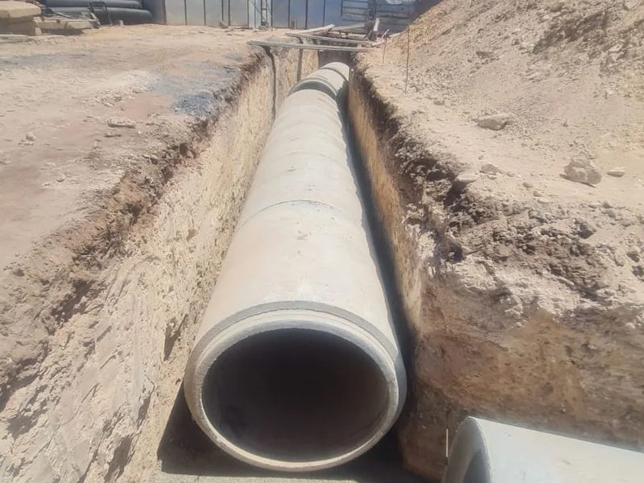

Assainissement Casablanca — Réseaux AEP & Canalisations
Pose de canalisations, réseaux d'évacuation des eaux usées, assainissement collectif et réseaux d'alimentation en eau potable (AEP) — WAHID EASY TRAVAUX, votre expert assainissement à Casablanca et dans tout le Maroc.

Votre expert assainissement au Maroc
WAHID EASY TRAVAUX est une entreprise spécialisée en assainissement à Casablanca. Nous réalisons l'ensemble des travaux de pose de canalisations, réseaux d'évacuation des eaux usées, branchements particuliers et réseaux d'alimentation en eau potable (AEP) pour particuliers, promoteurs et collectivités au Maroc.
Forts de plus de 10 ans d'expérience dans le BTP marocain, nos équipes maîtrisent toutes les techniques de pose en tranchée, les matériaux utilisés (béton armé, fonte ductile, PVC, PEHD) et les normes marocaines en vigueur.
Assainissement & AEP — Prestations complètes à Casablanca
Les travaux d'assainissement à Casablanca constituent un enjeu majeur pour la santé publique et l'environnement. WAHID EASY TRAVAUX réalise l'ensemble des travaux de réseaux d'assainissement et d'alimentation en eau potable pour tous types de projets : lotissements résidentiels, zones industrielles, équipements publics et marchés communaux au Maroc.
Assainissement des eaux usées
Réseaux d'assainissement collectif
Nous réalisons la pose de réseaux d'assainissement collectif selon les plans établis par les bureaux d'études agréés. Chaque réseau est dimensionné pour assurer l'évacuation optimale des eaux usées domestiques et industrielles vers les stations d'épuration.
- Pose de collecteurs en béton armé (diamètre 300 à 1200 mm)
- Pose de canalisations PVC et PEHD pour branchements particuliers
- Construction de regards de visite béton armé
- Pose de boîtes de branchement et tampons fonte
- Raccordement au réseau public (LYDEC, RADEEC, ONEP)
- Mise en place de déversoirs d'orage
Assainissement individuel
Pour les zones non raccordées au réseau collectif, nous installons des systèmes d'assainissement individuel conformes aux normes marocaines :
- Fosses septiques toutes eaux en béton armé
- Micro-stations d'épuration
- Puits perdants et épandage souterrain
- Bacs dégraisseurs et préfiltres
Assainissement pluvial
La gestion des eaux pluviales est indispensable pour protéger les infrastructures et éviter les inondations. Nous réalisons :
- Réseaux d'eaux pluviales séparatifs
- Bassins de rétention et infiltration
- Caniveaux, avaloirs et grilles de récupération
- Noues paysagères et tranchées drainantes
Réseaux d'alimentation en eau potable (AEP)
Pose de conduites AEP
WAHID EASY TRAVAUX réalise la pose de réseaux d'alimentation en eau potable pour lotissements, zones industrielles et équipements publics. Nous maîtrisons tous les matériaux utilisés au Maroc :
- Conduites en fonte ductile (DN 80 à DN 600)
- Conduites PEHD haute densité (PN 10 et PN 16)
- Conduites PVC pression
- Conduites en acier pour grandes pressions
Accessoires et raccordements AEP
- Pose de vannes, ventouses et compteurs de secteur
- Installation de bouches à clé et poteaux incendie
- Raccordements au réseau ONEE (ex-ONEP)
- Réalisation de chambres de vannes en béton armé
- Tests de pression et désinfection des réseaux
Réhabilitation de réseaux existants
WAHID EASY TRAVAUX intervient également sur la réhabilitation de réseaux d'assainissement et d'AEP vétustes : inspection caméra, chemisage intérieur, remplacement de canalisations et réfection de regards. Nous intervenons à Casablanca, Rabat, Marrakech et dans tout le Maroc.
Pourquoi nous confier vos travaux d'assainissement ?
Expertise réseaux
Maîtrise de tous les matériaux (fonte ductile, PEHD, PVC, béton armé) et des techniques de pose en tranchée.
Conformité ONEE & LYDEC
Travaux réalisés selon les cahiers des charges ONEE, LYDEC et RADEEC. Raccordements officiels garantis.
Délais maîtrisés
Planning rigoureux et coordination parfaite entre terrassement, pose et remblaiement pour livrer dans les temps.
Matériel professionnel
Pelles mécaniques, compacteurs et équipements de pose adaptés à chaque diamètre de canalisation.
Prix compétitifs
Devis détaillé et transparent. Meilleur rapport qualité/prix pour vos travaux d'assainissement au Maroc.
Équipe spécialisée
Techniciens réseaux et conducteurs de travaux expérimentés dans les projets d'assainissement au Maroc.
Comment se déroule un chantier d'assainissement ?
Étude du projet
Analyse des plans, lecture du cahier des charges et étude du tracé optimal du réseau.
Devis détaillé
Remise d'un devis complet avec quantitatif, matériaux, délais et prix sous 24h.
Terrassement tranchées
Excavation des tranchées aux cotes et pentes prévues par les plans d'exécution.
Pose canalisations
Mise en place du lit de pose, pose des canalisations et réalisation des joints.
Regards & branchements
Construction des regards de visite, boîtes de branchement et raccordements.
Test & réception
Tests d'étanchéité, inspection caméra si requis, remblaiement et réception contradictoire.
Assainissement dans tout le Maroc
WAHID EASY TRAVAUX intervient pour vos travaux d'assainissement et de réseaux AEP à Casablanca et dans toutes les grandes villes du Maroc.
FAQ — Assainissement & AEP Casablanca
Le coût d'un réseau d'assainissement dépend de plusieurs facteurs : la longueur et le diamètre des canalisations, la profondeur de pose, la nature du sol et les accessoires nécessaires. WAHID EASY TRAVAUX fournit des devis gratuits et détaillés sous 24h pour tous vos projets à Casablanca.
Un réseau séparatif dispose de deux canalisations distinctes : une pour les eaux usées et une pour les eaux pluviales. Un réseau unitaire collecte les deux dans une seule canalisation. En milieu urbain à Casablanca, le réseau séparatif est désormais imposé par les nouvelles réglementations marocaines.
Oui, WAHID EASY TRAVAUX réalise les travaux de pose et assure le suivi des raccordements officiels aux réseaux ONEE (ex-ONEP) et LYDEC pour les projets à Casablanca. Nous préparons les dossiers techniques nécessaires pour l'obtention des autorisations de raccordement.
Absolument. Nous intervenons pour diagnostiquer, réparer et réhabiliter les réseaux d'assainissement et d'eau potable vétustes. Nous proposons des solutions de chemisage intérieur, de remplacement de tronçons défectueux et de réfection complète des réseaux anciens au Maroc.
Oui, WAHID EASY TRAVAUX prend en charge la viabilisation complète de lotissements : assainissement eaux usées, réseau AEP, voirie, électricité et éclairage public. Nous coordonnons tous les corps d'état pour une livraison clé en main dans les délais.